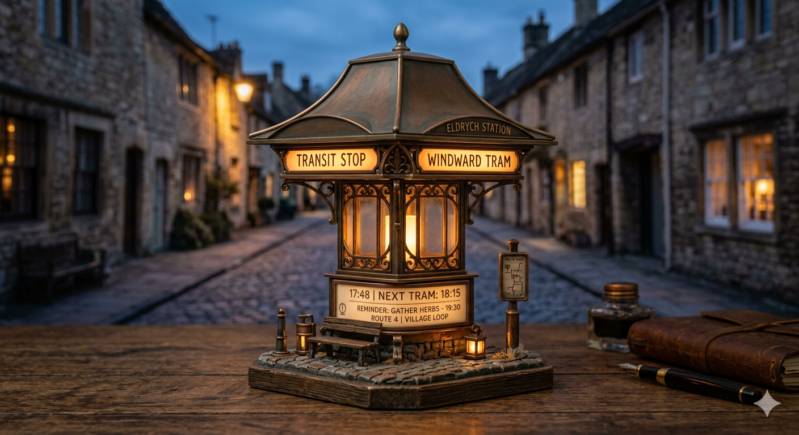

Transit Ambient Object
Dusk Station
Dusk Station is a miniature desk sculpture that translates the atmosphere of a quiet storybook town into a collectible object. Its lantern-like station form combines a softly curved metal canopy, translucent glass surfaces, and warm amber illumination.
Behind its nostalgic silhouette, the piece introduces a route-style electronic display concept capable of showing time, reminders, or weather in a poetic and restrained manner. The object turns everyday information into something emotionally legible and visually calm.
With a body imagined in sandblasted aluminum and a dark walnut base, Dusk Station balances industrial precision with domestic warmth. It works equally well as a bedside light, a contemplative desk companion, or a refined collectible for those drawn to magical realism and miniature transit worlds.
- Material direction: Sandblasted aluminum, translucent glass, walnut base
- Display idea: Time, reminders, weather, route narrative
- Mood: Sunset calm, gentle ritual, quiet travel memory